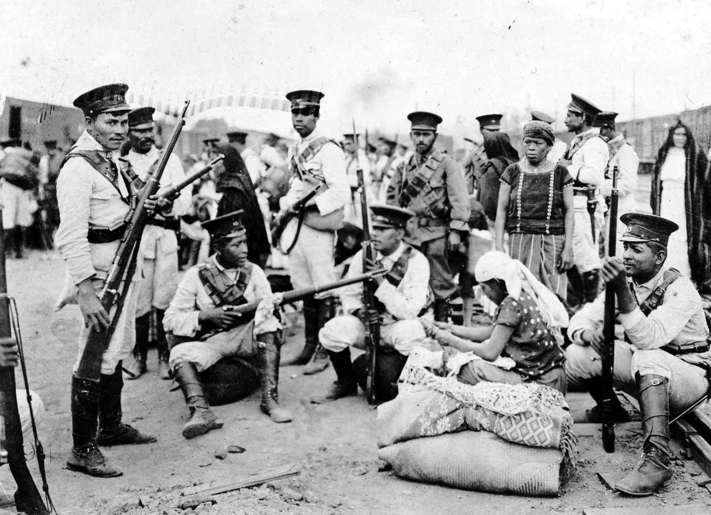

LA REVOLUCIÓN MEXICANA, EL CONFLICTO QUE TRANSFORMÓ MÉXICO
La revolución mexicana, que estalló en 1910, tuvo su detonante en el descontento popular hacia la dictadura de Porfirio Díaz. A partir de ahí se iniciaron una serie de violentos enfrentamientos entre los partidarios de facciones con intereses muy distintos que transformarían de manera radical las estructuras políticas y sociales del país y acabarían convirtiendo a algunos de sus líderes, como Emiliano Zapata y Pancho Villa, en auténticas leyendas.
Es 20 de noviembre de 1910. México se encuentra sometido al yugo del dictador Porfirio Díaz, bajo el cual no han hecho más que aumentar la represión y la desigualdad social. Pero con su despótico gobierno lo que sí lograría Díaz sería unir a dos famosos líderes revolucionarios, Pancho Villa y Emiliano Zapata, en una cruzada que duraría casi una década. Siguiendo el dictado de los lemas acuñados por Zapata, "mejor morir de pie que vivir toda una vida arrodillado" o "la tierra es para quien la trabaja", ambos líderes acabarían poniendo fin a una dictadura que duraba ya 35 años, y su lucha serviría de inspiración a los futuros movimientos revolucionarios que surgirían en America Latina a lo largo del siglo XX.
